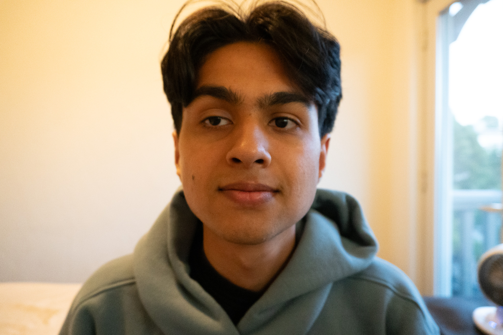
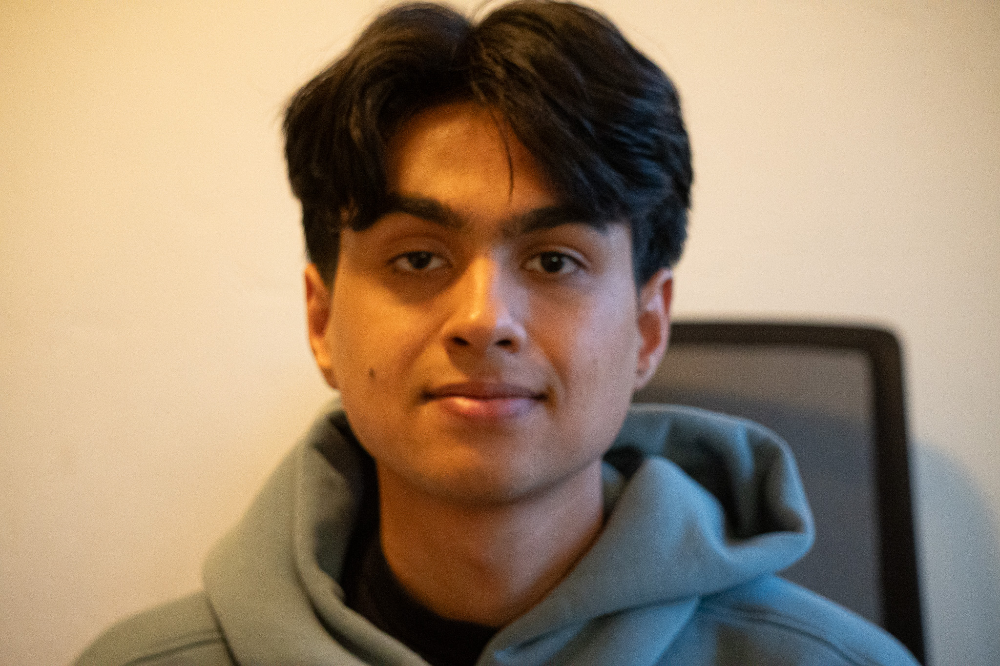
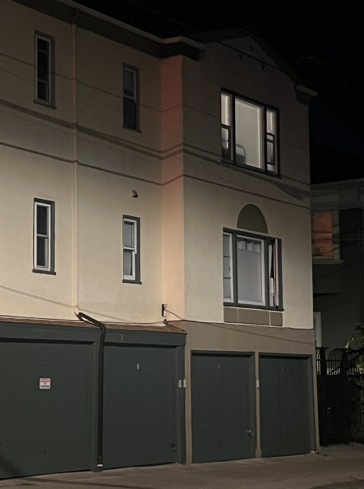
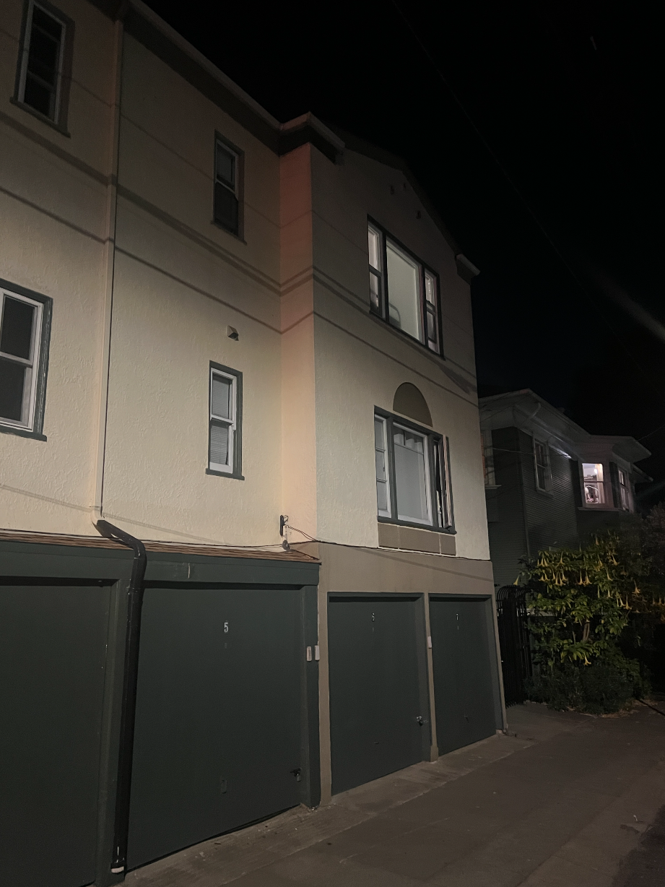
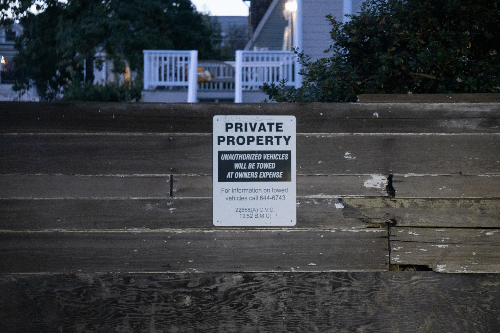

CS 180 Programming Project #0
Becoming Friends with Your Camera
Anirudh Kotamraju
Part 1: Selfie — Wrong vs. Right

Close & wide — perspective distortion visible.

Stepped back & zoomed — more natural proportions.
Part 2: Architectural Perspective Compression

Far away building view with zoom.

Close up building view without zoom.
Part 3: The Dolly Zoom

Subject size held steady while background scale shifts with zoom.